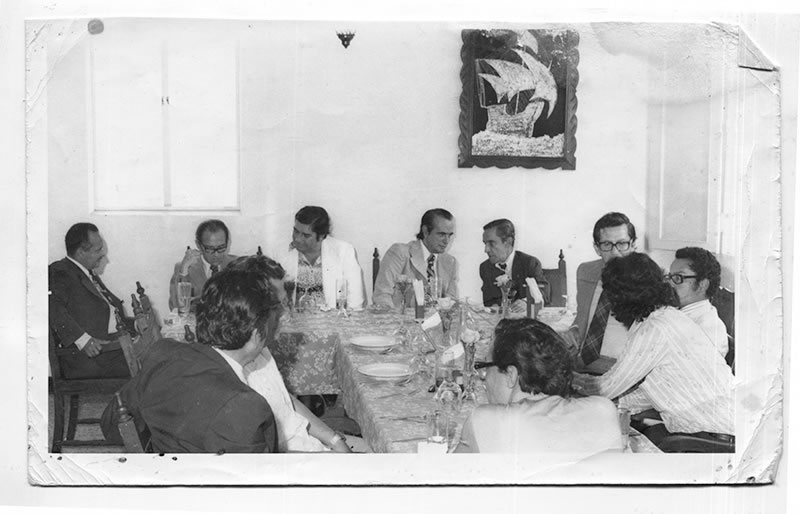
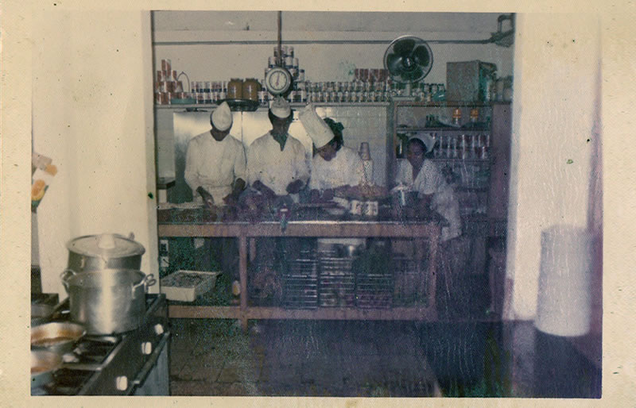
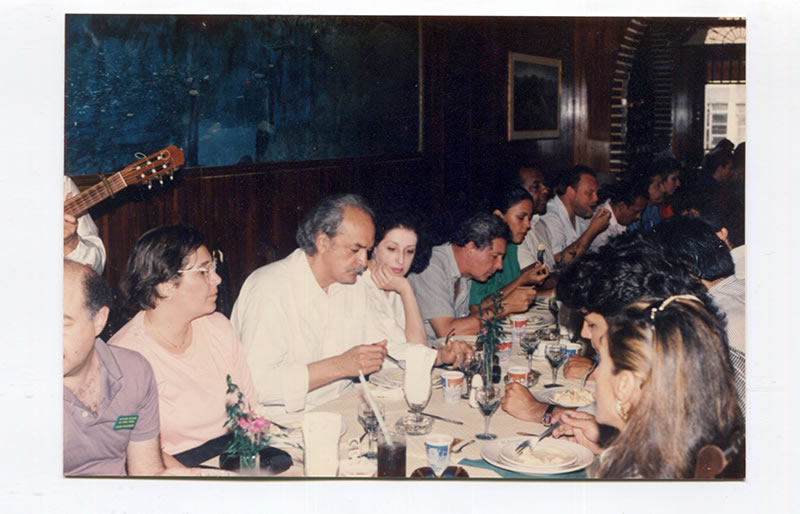

NUESTRA HISTORIA
Filosofia de nuestro restaurante "El Rincón del Marisco"

Inicia hace mas de 25 años de la mano de su fundador, quien a través de estos años logró fundamentar su creencia en la buena cocina y excelencia en el servicio, dándole a su restaurante el prestigio que ha mantenido hasta la fecha y que gracias al esfuerzo de muchos ha logrado extenderse en todo el norte del país, volviéndose uno de los restaurantes de mayor influencia en el estado de Sonora, rebasando las fronteras ha logrado extenderse en todo el país, contando con 13 sucursales y llevando el mejor sabor del norte hacia todo Honduras.
Misión
Satisfacer el gusto por la buena cocina, a través de una excelente atención y un servicio de altísima calidad.
Visión
Crecer con honestidad y responsabilidad como el restaurante de mariscos más importante del país.
Valores
Respeto, solidaridad, honradez, humildad, consideración a terceros, disciplina, compromiso.
Años de ofrecer lo mejor


